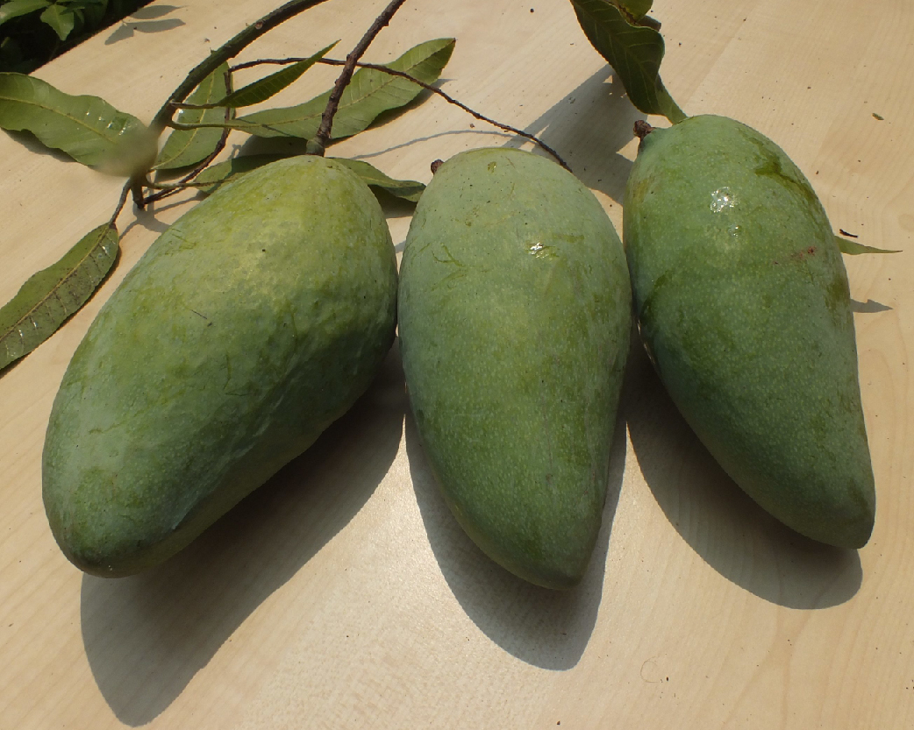

มะม่วงน้ำดอกไม้มัน

ลักษณะประจำพันธุ์ ผลทรงรี การออกดอก และติดผล ปานกลาง เป็นมะม่วงพันธุ์หนัก อายุการเก็บเกี่ยว 100-120 วัน ผลผลิตในช่วงฤดู มีน้ำหนักผล 550-940 กรัม เปลือกผลดิบสีเขียว มีเนื้อสีขาว รสหวานอมเปรี้ยว เปลือกผลสุก สีเหลืองอมเขียว ลักษณะของเนื้อละเอียด มีสีเหลืองและมีรสหวาน 19.1-22.5 องศาบริกซ์ เนื้อมะม่วงมีกลิ่นอ่อน เปอร์เซ็นต์เนื้อ 88.3 เปอร์เซ็นต์ ปริมาณเส้นใยน้อย ปริมาณน้ำในเนื้อมาก จุดเด่น คือ ใบมีลักษณะคล้ายเขียวเสวย ผลคล้ายน้ำดอกไม้ แต่ใหญ่กว่า